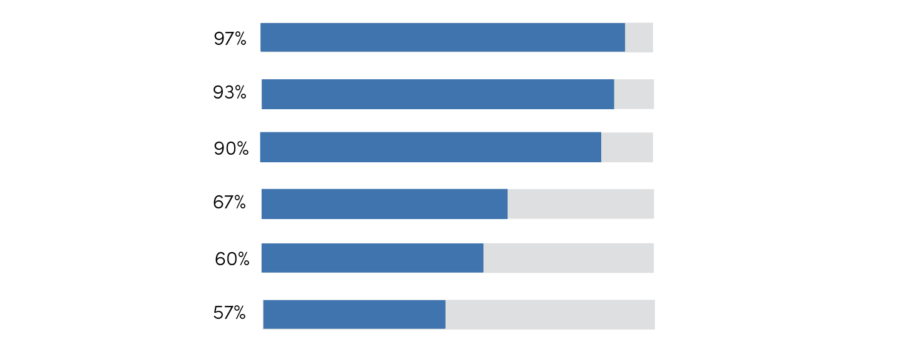
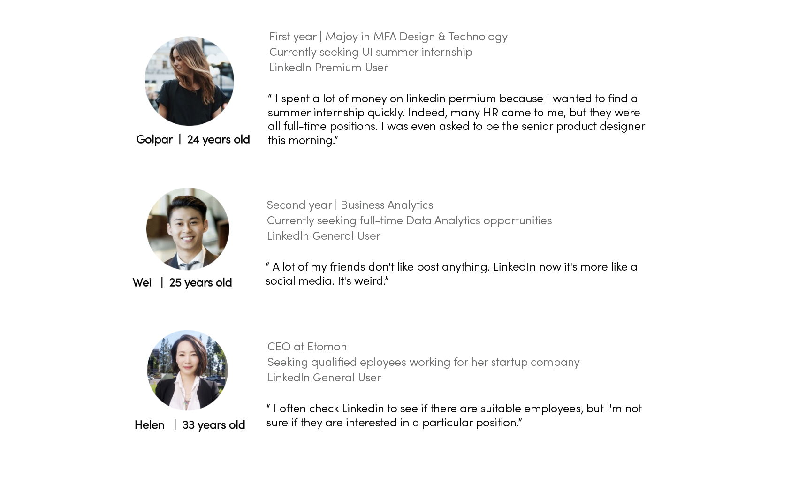
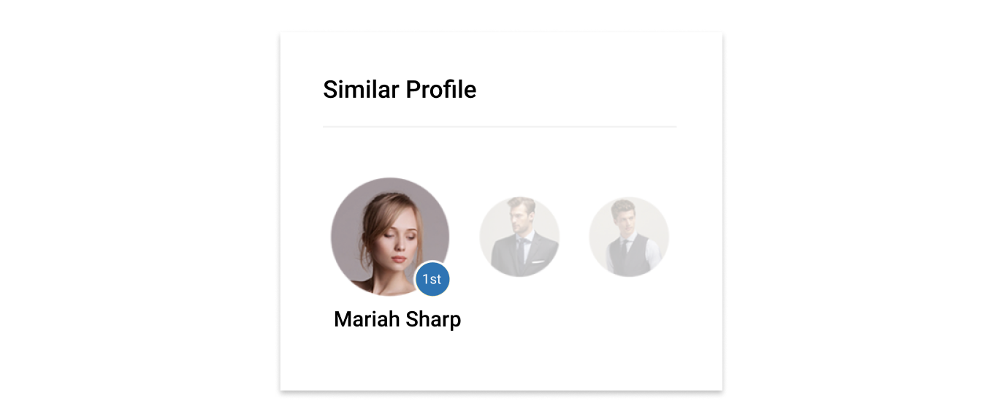
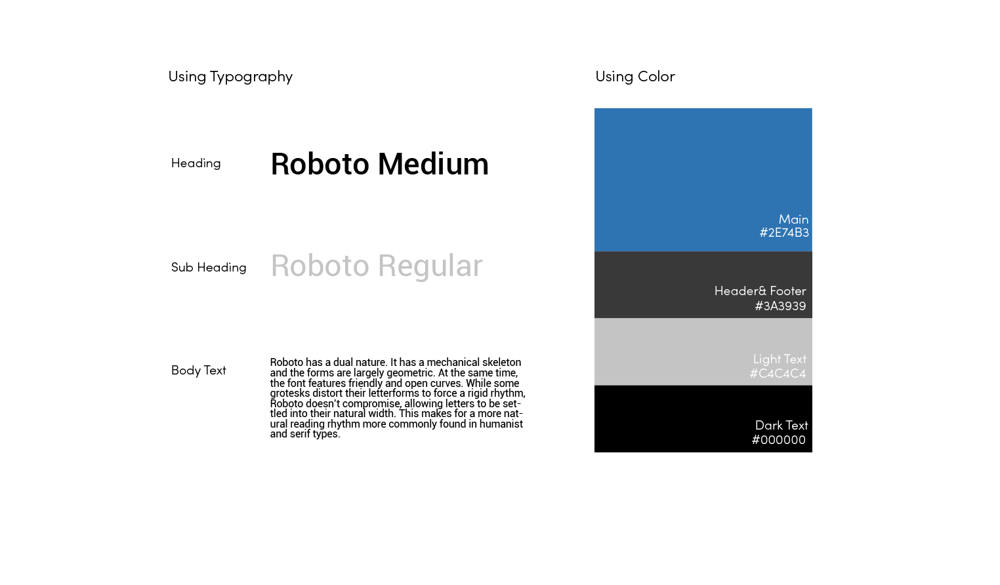
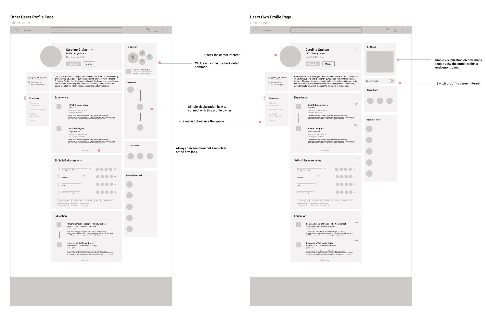

YEAR: 2019(Ongoing) | Company: Linkedln | ROLE: UI/UX Design | TOOL: Figma
LinkedIn is a business and employment-oriented service that operates via website and mobile apps. The profile page that I needed to redesign is for job seekers posting their CVs in order to build professional networks and ultimately get the jobs they wanted, as well as for recruiters to find better employees.
In order to be successful in this redesign, I spent two days doing thorough interviews of diverse users of LinkedIn, identifying what is not working too good. I also looked into the usability of various features and identified the features users want the most and the features they consider as meaningless or distracting.
97% of users never noticed the dashboard feature
93% of users used LinkedIn for job seeking
90% of users don’t use the social media function
67% of users wanted to check for commonality between their own profile and others
60% of users think the profile page content is too crowded
57% of users love to see who reviewed their profile page recently
I started my research by categorizing two types of users that would browse the profile page. The first group of audience is job seekers who share their profiles to find jobs or look at others’ profile pages to gain information. The second group of audience is recruiters who want to find good employees. Below is the persona that was created base on my in-depth research.
Based on the insights from users, I came up with goals to add and modify some elements to improve its usability and look.
• Create new UI design that is professional, clear and simple
• Redesign the "career interest" function user flow
• Add a side menu to create navigate various experience
• Create simple data visualization of dashionbaord, skills and how to connected section
• Downsize the social feed feature
• Add "Similar Profile" section when visit others users profile
On the profile page, although many are unaware that today's users are able to selectively open the "career interest" function that lets recruiters know you're open. However, the profile page cannot accurately show that the user is looking for a job and does not show what job user is looking for. Through interviews with users, I found that users who are looking for a job are eager to make their career intentions clear on the profile page. Based on this point, I redesign the profile page. For users who have the “career interest” function enabled will see a blue circle around their profile picture to indicate that they are looking for a job. And by hovering the profile picture, the job position they are currently seeking will be displayed.

Some users have long profile pages due to their rich experience. But when too long page and to much text would makes users who browser this profile fatigue. Hence, I design to create a side menu to make better use of space.

I found out that users also love to check similar profile while browsing others profiles. Therefore, I decide to add a feature called "similar profile" on the left side.

I asked various LinkedIn users: 97% of them did not notice there is a dashboard that inform them number of how my people look at their profile, how many people read their post and how many companies they search within a week. Although the dashboard is in an obvious section, it’s hard to be aware. Users don’t really care about these data as well, except few people say how many people visit the profile page is somewhat important. Hence, I design to put the dashboard on the side but not right under the description. Also, there is only a simple data visualization about the number of visitors.
Besides, the profile page is too much text and I think is a good idea to add some graphic elements. Hence, I also decide to make simple data viusalization on Skills, Common and Connection section.
The profile picture and logo itself have many colors. In order to keep the page clean and tidy, I did not add any other colors except the original Linkedin blue. For the header and footer, I chose a little bit darker gray, which makes the whole feeling of the site more professional, clear and simple.
There are slightly different bewteen users own profile page and others profile page. Users can edit their own profile page, see their private dashboard and can choose to open "career interest" feature, while browsing others profile page, users can find the common with the profile ower, see how to connect with the profile owner and check similar profile.
